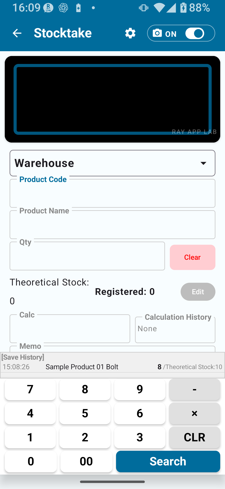

What Full unlocks, detailed locations, finalizing physical counts, applying to inventory, and real-world workflows
Topics covered in this page:
What Full Unlock enables / Differences from Simple Unlock / Detailed location setup and use / Extended CSV import/export / Stocktake history / Finalizing the stocktake results / Applying to inventory / Important notes / Real-world workflows for Full Unlock
CHAPTER 1
Full Unlock Overview
The Stocktake Full Unlock removes record limits and enables the shared full settings, including code rules, location rules, camera settings, extended CSV output, and more.
This tier supports high-volume product management and detailed location-based stocktaking workflows.
Full Unlock Feature List
✅ Features Added / Unlocked by the Full Unlock
Remove limits on master records, stocktake history, and export records
Detailed code rule settings
Detailed location rule settings
Detailed camera scan settings
Extended CSV export
Detailed editing
Screen rotation locking (carried over from Simple Unlock)
✗ (Detail mode can be set but features are limited)
○
CHAPTER 3
Detailed Locations
With the Full Unlock, all locations registered in the Location Master become available for stocktaking. You can configure shelf numbers, floors, areas, and other granular locations beyond just warehouse and store.
Setting Up Detailed Locations
Go to Settings → Stocktake Settings and select Detail mode.
Go to Master Management → Location Master and register the locations you need.
In the stocktake screen, tapping the location field will show all registered locations as options.
⚠ Note
Even with the Full Unlock active, if the mode is still set to Simple A/B/C, only the simple locations are shown. Switch to Detail mode to use all registered locations.
💡 Tip
If detailed locations are registered but the app is still in Simple mode, the app may prompt you: "Switch to Detail mode to use more locations."
CHAPTER 4
Extended CSV Import / Export
The Full Unlock enables extended CSV import/export for stocktaking.
Stocktake CSV Import Specs (Full Unlock)
CSV Type
Purpose
Main Columns
Required/Optional
Notes
Available In
Stocktake CSV (2 columns)
Basic stocktake master import
Product code, Product name
2 columns required
No header row; data starts at row 1
All plans
Stocktake CSV (3 columns)
Stocktake master import with theoretical stock
Product code, Product name, Theoretical stock
3 columns required
Physical count not needed at import (starts from 0)
All plans
Stocktake CSV Export (Full Unlock)
Exports include a language-specific header row on the first line.
The stocktake_summary CSV does not include date, time, or location columns.
For detailed exports by location, shelf, date, or line item, check the available options on the history/export screen and review the generated file.
🚨 Important
CSV import and export operations can significantly alter your data. Always take a backup before proceeding.
CHAPTER 5
Stocktake History
With the Full Unlock, the stocktake history record limit is removed. You can store and review past stocktake data over a long period.

Fig. 6-1 Stocktake History Screen
What You Can See in History
Date/time saved, product code, product name
Physical count quantity, location
Memo (Full Unlock)
Finalization status (Pending / Finalized)
CHAPTER 6
Finalizing Stocktake Results
In the Full Unlock, there is a "Finalize Stocktake Results" action for the stocktake data you have entered. Finalizing treats the stocktake results as the official record for subsequent review and inventory application.
Flow from Stocktaking to Finalization
① Enter Stocktake Data: Scan barcode → Enter quantity → Save
↓
② Review Stocktake History: Confirm saved entries and correct any errors using the available on-screen actions before proceeding
↓
③ Finalize Stocktake Results: Perform the finalization action
↓
④ Apply to Inventory (optional): Apply finalized results to Inventory Management
🚨 About the Finalize Button
Finalizing the stocktake results is a high-impact operation that affects inventory data. The Finalize button is placed in a separate danger zone below the confirmation details — it is not the primary button you press first. Review all discrepancies and affected data carefully before pressing it.
🔍 After Finalization
After finalization, follow the available on-screen guidance and check the stocktake history before making further changes. Proceed carefully once results have been finalized.
🚨 Important
Always review the stocktake history before finalizing. Read the confirmation screen instructions carefully before proceeding.
CHAPTER 7
Applying Stocktake Results to Inventory
Applying stocktake results to Inventory Management adjusts stock quantities to match the finalized physical count. Discrepancies are recorded as adjustment history entries.
Apply to Inventory — Overview
Enter stocktake data and finalize the stocktake results.
Run the Apply to Inventory operation.
Review the content (adjustment details) on the confirmation screen.
Confirm and execute the apply action.
Verify the adjustment details in inventory history.
🚨 Important
Applying to inventory makes significant changes to stock quantities. Always take a backup CSV before proceeding. Read the confirmation screen thoroughly before executing.
🔍 After Applying to Inventory
After applying stocktake results to inventory, review inventory history and compare with your backup CSV if needed. Apply only after confirming the displayed adjustment details.
CHAPTER 8
Important Notes on Applying to Inventory
🚨 Always Back Up Before Applying
Applying to inventory can make significant changes to stock quantities. Always export a backup CSV first (Settings → Export or the backup option shown in the app).
⚠ Read the Confirmation Screen
For any operation that changes data — finalizing, applying, deleting, resetting — read the confirmation screen carefully before executing.
⚠ Pricing & Purchase Terms
Always check Google Play Store for legal and purchase conditions — this manual does not state them definitively.
CHAPTER 9
Real-World Workflows for Full Unlock
Monthly Stocktake Workflow
At the start of the month, import a stocktake CSV to refresh your product master.
Set Stocktake Settings to Detail mode and prepare shelf- and area-level locations.
Conduct the stocktake: scan barcodes and enter physical counts.
Review all entries in stocktake history.
If everything looks correct, finalize the stocktake results.
Apply to inventory (after taking a backup).
Review stocktake adjustment entries in inventory history and investigate any discrepancies.
Export the stocktake result CSV for archiving.
📌 Chapter Highlights
Full Unlock removes all record limits and enables detailed locations and extended CSV features.
To use detailed locations, switch to Detail mode under Settings → Stocktake Settings.
The Finalize → Apply to Inventory flow makes large-scale data changes — proceed with care.
Always take a backup CSV before applying to inventory.
🔍 Notes Before Use
After finalizing stocktake results, use the on-screen guidance and stocktake history to review any subsequent changes.
After applying stocktake results to inventory, review inventory history and compare with the backup CSV if needed.
For detailed CSV exports, confirm the available options on the export screen and check the generated file.
Before finalizing, review saved stocktake entries and correct them using the available on-screen actions.
Use the app's detailed location screen when detailed locations are enabled.